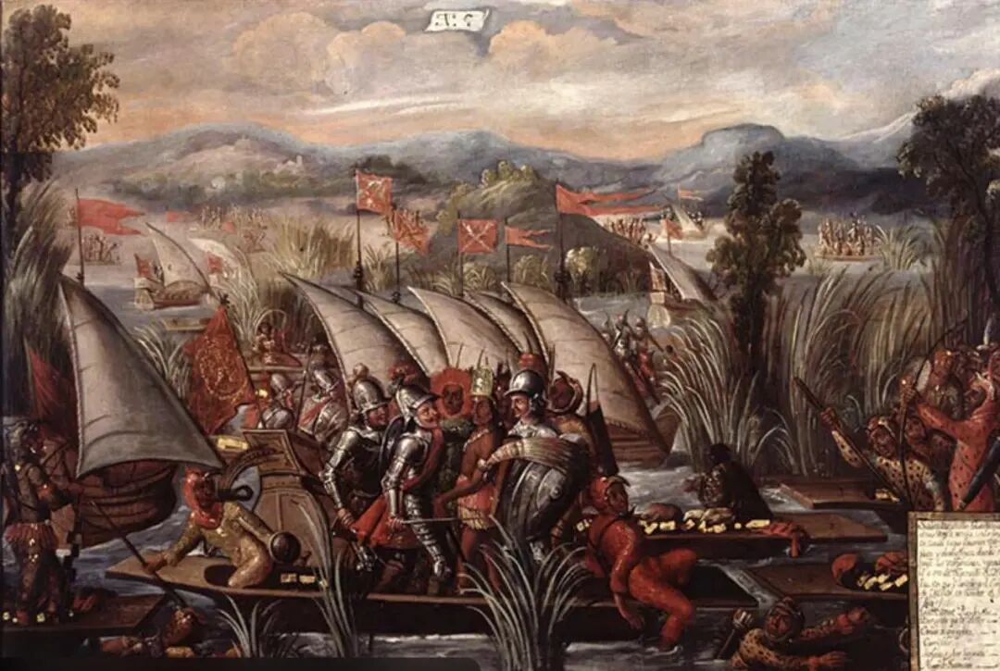
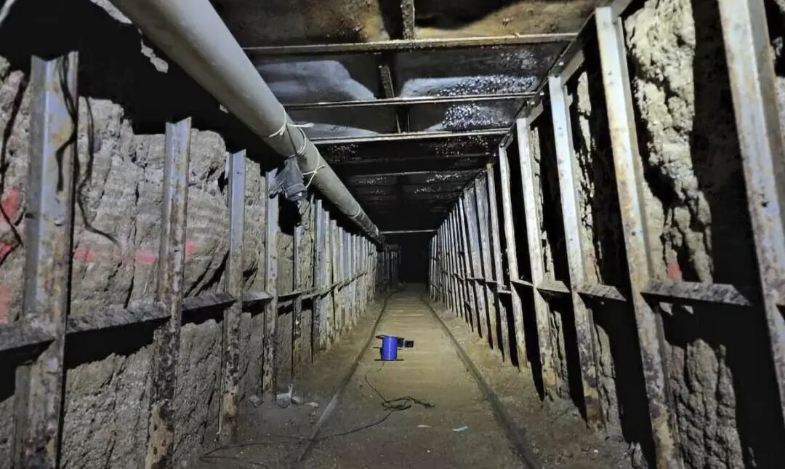
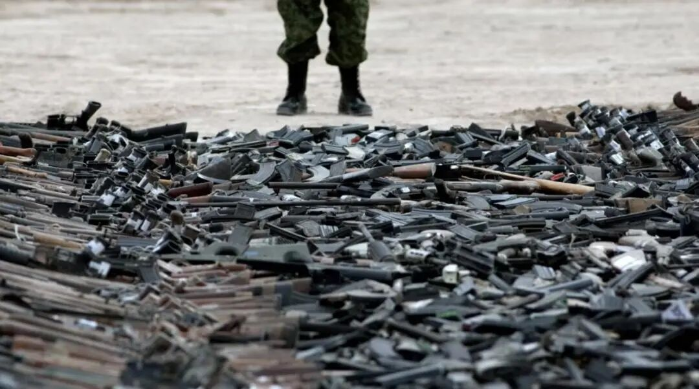
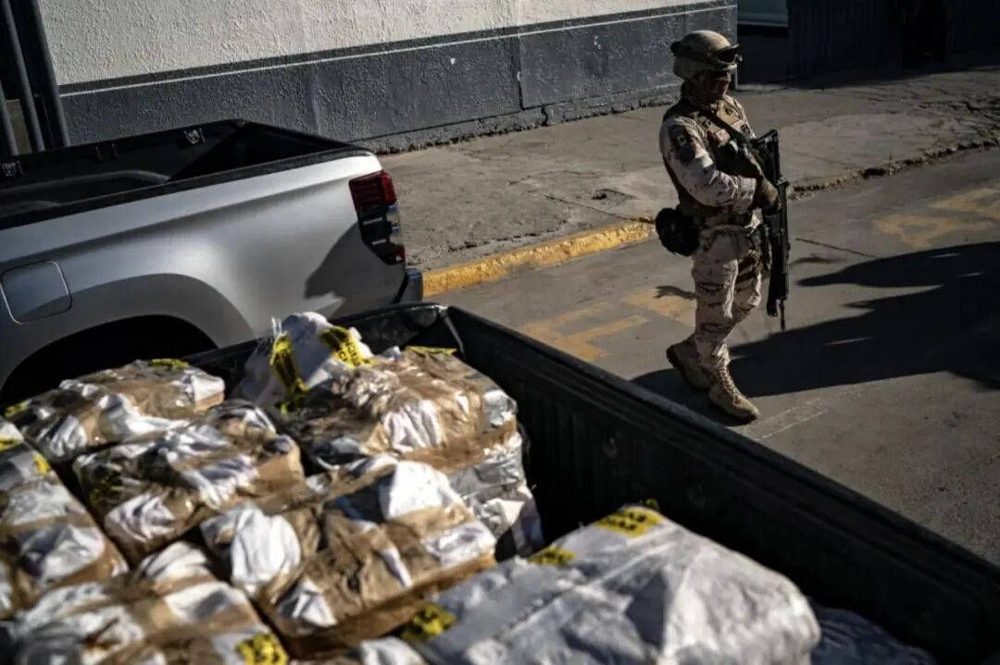

库利亚坎——锡那罗亚贩毒集团的据点
2001年，监狱里的一名不足一米六的犯人走出房门，不慌不忙地潜入远处的洗衣房，低头、弯腰，轻而易举地钻进了洗衣车内，一名内线煞有其事地推着洗衣车，大摇大摆地走出了监狱。2015年7月11日，在墨西哥最高安全等级的监狱里，同样一名犯人走到矮墙后，消失在监狱的监控盲区，他通过一条隧道，骑上摩托，以最快的速度奔向自由。这名犯人叫古兹曼，二度越狱后，他在推特告诉监狱看守：只要事情发生了第二次，就一定会有第三次。这么嚣张的犯人背后是墨西哥最大的贩毒集团“锡那罗耶贩毒集团”，古兹曼控制着这个价值5亿英镑，业务涉及近50个国家的贩毒集团。如此“成功”的贩毒集团背后是墨西哥毒品行业数十年累积的深渊。
将墨西哥推向毒品深渊的归根结底是其薄弱的经济基础，社会的贫困、严重的贫富两极分化、还有经济上对美国的依赖都是将它推向深渊的力量，辅之政府的腐败、治理的无力和特殊的文化传统，墨西哥在毒品深渊里挣扎又难以寻求出口。下面将从历史的角度解释墨西哥的经济政治缺陷的可能源头所在，再按时间顺序，描绘墨西哥走向毒品深渊的道路。
深渊的源头（殖民时代）

西班牙对墨西哥的殖民侵略
墨西哥的现状无法避开被西班牙殖民的那段时间，长达几个世纪的殖民统治对墨西哥影响深远。
在被西班牙人发现之前，墨西哥所在的南美洲，这片富饶又美丽的土地孕育了悠久辉煌又独特的文明，富有智慧又勤奋努力的印第安人在这片土地上创造着属于自己的农业经济。此时的印第安文明正在从部落制走向奴隶制帝国，但在其文明独立发展的进程中，欧洲人作为进程稍快的人类，强盗式地闯入这片土地。作为环球冒险和殖民扩张的先驱，在1492年，哥伦布发现新大陆后，西班牙征服者用武力、瘟疫流感摧毁了在美洲生长了数百年的阿斯特克帝国、印加帝国和玛雅文明，并对美洲大片领土宣称主权，从此开始残酷漫长的殖民统治，墨西哥也沦为西班牙殖民帝国的一片领土。西班牙的殖民政策与英国的殖民政策相差甚远，同样是剥削掠夺，在旧殖民体系崩溃之后，殖民国家纷纷独立，两国曾经统治的土地，各自发展却尽不相同。墨西哥如今大多数居民的贫穷、政治制度的薄弱、独特的文化都离不开殖民时期的历史。
政治治理的薄弱和腐败
哥伦布发现美洲的时期，西班牙是个典型的封建国家，较早地实现了政治上的统一，建立中央集权国家，君主成为权力的中心，君主的支持为海外扩张提供了政治保障。对东方黄金香料的渴望与奥斯曼土耳其帝国阻断了原贸易渠道，这推动了西班牙的海外探险，使其走在西欧殖民扩张队伍里的最前列。但此时的西班牙资本主义还在刚刚冒头的时期，并非发展到了需要开辟海外市场的地步。西班牙贵族为了财富的殖民扩张，与为了市场扩张是不同的，不同的动机在很大程度上决定了西班牙在墨西哥的统治方式。
西班牙在墨西哥的近三百年的时间，为墨西哥带来专制独裁、强人统治的传统。西班牙把本身的封建主义和集权专制移植到其殖民地墨西哥身上，且与墨西哥原本的帝国制度很容易地结合了起来。甚至以积累财富为目的的西班牙，还不择手段地在墨西哥殖民地盛行卖官得爵制度，几乎所有官职都可以待价而沽，这刺激了把官职作为快速致富和提高社会地位的手段需求，也为墨西哥后来官员的腐败留下了后患。可以说西班牙对墨西哥的政治统治是为了更快更方便的掠夺，而非作为生存家园来建设，这与英国人对美国作为移民选择地的建设截然不同。
薄弱的经济基础
我们已经提到，西班牙航海的首要目的是寻找马可波罗书中东方诱人的黄金、丝绸、瓷器、珠宝，当其探索财富的船只到达拉丁美洲，发现墨西哥这片资源丰富的宝地之后，也不忘“初心”，掠夺了当地大量的黄金白银，其主要目的不是移民定居、不是为了征服，更不是为了开辟贸易市场，而是为了掠夺真金白银。其之后的殖民统治，也是为了可以持久稳定地挖黄金。据记载，从1521—1600年，西班牙从美洲掠走的黄金为20多万千克，白银为1800万千克。在白银的开采、运输、贸易的刺激下，西班牙拉丁美洲殖民地形成了以白银产地为中心的“白银经济圈”，即周围的其他产业都是为了白银开采而相应发展的，且西班牙为了增加贵金属的掠夺量，迫使劳动力尽可能多的投入矿业，对其他行业实行封建式的垄断。这种一开始就以银矿的开采和出口为主的进入世界市场的方式，其实是墨西哥形成对单一矿产品出口经济的依附特点的重要根源，这种经济特点使墨西哥在独立之后处处受制于人。
同时，作为封建领主制国家的西班牙，其殖民扩张的主体是西班牙贵族而非新兴资产阶级，这种情况看在很大程度上已经决定了其工业发展的局限性。墨西哥作为殖民地，仅有的工业生产不是为了对外贸易，而是满足当地最基本的需求，当其工业生产发展超过其需求时，西班牙殖民者就会掐断流通渠道，将殖民地工业扼杀在摇篮里。这让墨西哥的工业体系长期属于残缺的状态，在立起国本的过程中困难重重。而这些真金白银到了西班牙手中，不是为了生产流通创造更多的财富，而是为了躺在金山银山上享受，与其生产，不如直接买，反正有钱，白银就这样被西班牙无止境地消费掉了，没给自己留在片瓦的资本。这是西班牙后期没落被英国赶超的原因。
懒散享乐的文化传统
西班牙还给墨西哥留下了深刻的文化烙印。在墨西哥，如果有一个约会，你提前到达会陷入等待，会被调侃“跟清洁工同时到达”，因为清洁工会提前给主人布置现场。这其实也与它的原宗主国西班牙如出一辙，西班牙本来的生活习惯和运转模式随着殖民统治扎根在了美洲，尤其是墨西哥。西班牙人不守时、懒散、唐突、官僚主义，还有广为闻名的享乐主义，这一方面是悠闲自得的慢生活方式，但一方面给人带来的缺陷很明显，尤其是享乐主义，它会使人们尽情地追求物质上的享受和肉体上的快乐，容易使人们陷入意志消沉、缺乏进取精神的状态之中。而在西班牙统治的几个世纪里，拉美的原住民不断遭到西班牙殖民者的驱赶和屠杀，其奋斗努力的文化也被逐渐毁灭，以至于拉美等国只能在宗主国西班牙的文化模式下生存，墨西哥也不例外。懒散与享乐主义也是墨西哥人民在面对毒品暴利诱惑时，选择迈腿走向深渊的一大助力。
西班牙统治下的墨西哥，封建式的殖民管理体系、腐败的政府统治，给墨西哥的建设留下了巨大的隐患，给暴利的毒品经济诸多漏洞可钻；资本消费矿业开采为核心的经济模式，薄弱的工业体系是众多人民贫困的历史原因，给毒品经济提供了大量的人手；同时享乐文化潜移默化中削弱了人民的意志力，在人们在贩毒深渊边缘添了一把力，将在底层挣扎的人民推了进去。
你凝望着深渊——临不测之渊（19世纪末-20世纪初）
插图：罂粟种植
在墨西哥，有一句很心酸的谚语“离美国太近，离上帝太远”，墨西哥的历史、现状以及未来，处处都有美国的参与，毒品这个领域也是。
在美国，19世纪到20世纪初，销售使用各种影响精神活动的毒品是合法行为，这培养了美国一大批瘾君子。从1890年开始，有各种禁毒人士出现，推动了对麻醉品的形式定罪，禁毒令在一些州被通过。禁毒令带来了意外却合理的效果，禁令导致毒品稀缺，在需求没有下降的情况下，稀缺会抬高在瘾君子眼中是必需品的毒品的价格，巨大的利润引来了更多的贩毒分子。
美国旺盛的毒品需求与高昂的利润是一片深渊，诱惑着就在深渊旁的墨西哥。墨西哥拥有着得天独厚的自然条件，它所在的纬度为仙人掌和罂粟提供了完美的温度条件。同时，1910年到1920年墨西哥正在革命，战乱破坏了许多人的生计，在革命之后，许多因战乱而贫穷的墨西哥农民加入了毒品行业。一入深渊，难以自拔，之后的几十年中，越来越多的墨西哥农民、中产阶级市民甚至富有的商人都选择投身于这桩买卖。用五力模型分析，这个行业确实是在个人经济角度上“正确”的选择：首先，入行壁垒低，他们并不需要多少启动资金。其次，没有替代品可言。第三，市场竞争小，美国的毒品市场十分广大，机会多的是，完全没有必要以暴力来保住市场份额。第四，上游供应商议价能力低，地理条件支持着，谁愿意谁去种。最后，下游消费者议价能力低，瘾君子的议价能力在看到那一小包使之犹在天上人间的药物之后，荡然无存。
唯一有风险的是如何将这种不合法的产品走私到美国，这在当时也十分容易。美国与墨西哥的边境线可谓漏洞百出，私逃的奴隶、军阀走私犯、酒类走私贩一堆人来回流动，穿越边界很容易。
在深渊中挣扎——越陷越深（20世纪10年代-20世纪90年代）

插图：延伸到美国境内的秘密地道
墨西哥加入毒品行业大军后的近百年，禁毒仿佛是一场拉锯战，每个禁毒举措总会给毒品行业带来意想不到的反作用，或者是说毒品行业里狡诈的毒贩，总能在政府的打击下，找到自己的生机并发挥其最大的作用。
“送上门”的保护伞
在20世纪10年代到30年代，墨西哥国家的政治动荡，革命风暴，许多领导人立志打击毒品，但在混乱的政治背景下，政府对外围的掌控存在着许多妥协，只要地方政府听命于革命制度党，并提供金钱和选票支持，政府就会任其在非法生意上失控。资金最足的毒贩自然而然地成为了地头蛇，使地方警察甚至军队成为毒贩的保护神，而地头蛇的特权之一就是在符合总统意志的前提下可以随心所欲地从事各种逐利的冒险和非法生意。
无意中的集中化
二战期间，鸦片出口急剧增长，传说是因为美国为了弄到吗啡给受伤的士兵，说服了墨西哥政府给毒品走私开绿灯。二战结束后，墨西哥政府发起摧毁非法罂粟作物的“伟大战役”，在美国尼克松政府和墨西哥卡特政府期间，推动实行了多种政策限制墨西哥流入美国的毒品数。但是，美国、欧洲及中东的毒品需求只增不减，墨西哥毒品产业追求扩张以获取更大的利益，而国家的打击只能打击到小鱼，而那些有能力收买警察、军队、国家安全理事会以及革命制度党政客的大鱼的实力却因此得到了壮大，毒品买卖更为集中化。
被“逼”出的新渠道
20世纪80年代，美国缉毒署政治地位提升，促成1986年《反毒品泛滥法》的通过。而墨西哥此时出现严重经济衰退，政府赤字严重，国家债务翻倍，货币贬值，加上墨西哥革命制度党持久的腐败，将支出浪费在自私自利的项目上。墨西哥政府别无选择，美国的援助尤为重要，必须全力配合美国缉毒署禁毒，授权军队扩大其对于禁毒行动的参与。
此时的美墨边境，星罗密布的巡逻和边检、嗅觉灵敏的缉毒犬成了墨西哥毒贩的一大难题。1989年，在本文开头两度越狱的古兹曼，请了专业的建筑师，设计了一条隧道，从墨西哥的一座平平无奇的房子连接到了美国亚利桑那州的一个仓库。打开隧道的方式也及其精妙，转动水龙头启动机关，屋子里活动的台球桌和地板会上升，露出隧道入口。之后壁炉、洗手池下都有可能是隐藏着隧道的地方。而从1989年开始，这样的隧道被发现的已经不止200百条。打造隧道的时间金钱成本都比其他交通方式高，但一条隧道只要开放几个小时，运输过去的毒品的利润就够开凿20条隧道，这种跨境运毒方式极其暴利，又能躲开缉毒犬，简直是完美的犯罪渠道。
深渊凝望着你——矛盾激化（20世纪90年代-21世纪初）

插图：墨西哥政府和军方缴获的大量贩毒集团武器
20世纪九十年代，墨西哥的新自由主义的经济政策触发了一些列的社会经济问题，尤其是在1994年1月1日，《北美自由贸易协定》生效之后。这个协定在极不平等的两个国家之间建立了一个假定为双方平等的贸易关系，结果再次佐证了那句“离美国太近”的悲剧原因。
首当其冲的受害者是农民，美国农业综合企业长驱直入墨西哥市场，将成千上万的墨西哥农民逐出了市场，玉米价格下降了近50%，即使农民别无选择，企图通过增加种植数量增加产量来提高收入，还是逃不过陷入贫困的生活，据统计在《北美自由贸易协定》签订后，生活陷入贫困的墨西哥农民数量增加了三分之一。与此同时，农村改革却不合时宜地进行着，国家降低对农民的补贴，导致传统农户的处境雪上加霜。
更糟的是，在任总统萨利纳斯为了减轻通货膨胀，将比索与美元挂钩，但比索的实际价值一直在下跌，即使他一直硬撑着，但当继任者塞迪略让比索汇率浮动时，比索贬值一半，引发了更为严重的通货膨胀，许多公司因此倒闭。
农民陷入贫困，失业人数激增，这场经济危机使墨西哥的犯罪活动激增，也改变了毒品业。无以维持生计的农民和失业者，发现日益蓬勃发展的毒品行业是他们在这片土地生存最容易的出路，毒品集团因此涌入了源源不断的新鲜血液。通货膨胀使原本工资微薄又没有上升空间的警员更容易被贿赂，警方腐败，为毒品集团的利益奔走。与北美自由贸易协定的签订使的跨境往来更为频繁，毒品走私有着更多的机会。各个方面都间接促使墨西哥毒品产业进入一个崭新的阶段。 2004年，美国“禁止制造半自动攻击性武器”的禁令到期解除，使杀伤力极大的武器纷纷南下，流入墨西哥，大规模火力集结，日益增强毒品集团对抗政府的能力。
万丈深渊，如何逃离（2006年-今）

插图：毒品战争
毒品战争
2006年，国家行动党候选人卡尔德龙将禁毒视为新政府的核心议程，集中前所未有的力量推行全面禁毒，发动毒品战争。此时墨西哥全国性的贩毒组织，就如割据一方的军阀一样，拥有控制的“领土”，拥有独立强大的武装力量，据说毒贩的军队规模与国家的军队规模相当，这样的阵容，使国家正常的扫毒行动上升为战争级别的毒品战争。卡尔德龙总统并未理解墨西哥的毒品深渊与墨西哥地方经济之间的联系，没有从经济基础入手，与毒品经济决裂，一味付诸武力。武力措施极大地挤压毒贩的生存空间，毒贩集团被分裂成更难以控制的小贩毒组织，而这些走投无路的毒贩对国家和平民进行血腥报复，引发让平民苦不堪言的毒品暴力。卡尔德龙执政六年间，6万墨西哥人因毒品暴力遇害，2.5万人失踪。墨西哥面临着两难的局面：禁毒和社会安全难以兼顾。
2012年佩尼亚·涅托担任墨西哥总统，这位总统放弃“擒王政策”，放弃军队禁毒，组建宪兵队禁毒，整合国内安全力量和法律，打击毒品暴力，加强防腐和社会治理，关注于经济和预防犯罪。这些措施无法维持长久，积贫积弊的墨西哥无法在短期内完成转变，在2015年后毒品暴力失控，2017年每10万人中有25人死于凶杀，2018年更是成为墨西哥现代史上最血腥的一年。佩尼亚政府最终还是选择借助止军队禁毒，却又重步卡尔德龙政府的后路：贩毒组织进一步分裂，并且向暴力犯罪转化。
毒品无罪化
插图：毒品交易
2018年，左派领导人奥夫拉多尔采取了截然不同的毒品政策，结束了长达十几年的毒品战争，将重点从禁毒转向犯罪预防，实行毒品去罪化，并从经济基础、社会基础入手，实行一系列改革措施，追求自下而上地瓦解贩毒组织。奥夫拉多尔看到毒品这个深渊是与贫穷相伴而生的。减少贫困和贫富悬殊、增加就业和教育机会将会减少误入深渊的年轻人。 但是，较为“温和”的毒品政策将直接刺激美国的毒品消费，受到了美国的强烈反对。“离美国太近”这一历史原因又一次出现，墨西哥的经济严重依赖美国，美国的立场和制裁都将制约墨西哥这一新的毒品政策有效实施。 逃离毒品深渊的出口似乎看到了一丝眉目，但过程中还有诸多荆棘障碍。 冰冻三尺非一日之寒，墨西哥的毒品问题的根本原因是社会贫困，而社会贫困又从殖民时期便埋下了种子，要将这片深渊填埋起来注定是复杂又漫长的。
> 参考文献：
[^1]曾昭耀.论墨西哥的政治现代化道路——墨西哥如何从考迪罗主义走向现代宪政制度[J].拉丁美洲研究,1993(01):24-30.
[^2]曾昭耀.论墨西哥的政治现代化道路(续)——墨西哥如何从考迪罗主义走向现代宪政制度[J].拉丁美洲研究,1993(02):29-35+39+64.
[^3]王文仙.殖民主义与墨西哥的发展瓶颈[J].史学理论研究,2013(04):19-23.
[^4]刘承军.两个美洲──拉美反殖思想传统的历史渊源[J].拉丁美洲研究,1996(02):53-58.
[^5]项冶,黄昭凤.15-18世纪西班牙美洲殖民统治的特点及影响[J].琼州学院学报,2014,21(06):96-102.
[^6]钟月强. 殖民地时期美洲经济南北差距的制度因素[D].天津师范大学,2016.
[^7]卢玲玲.从毒品战争到毒品去罪化:墨西哥毒品暴力治理的发展[J].拉丁美洲研究,2019,41(06):75-94+156-157.
[^8]释启鹏,杨光斌.墨西哥暴力政治的新自由主义政策根源[J].当代世界与社会主义,2019(02):119-125.